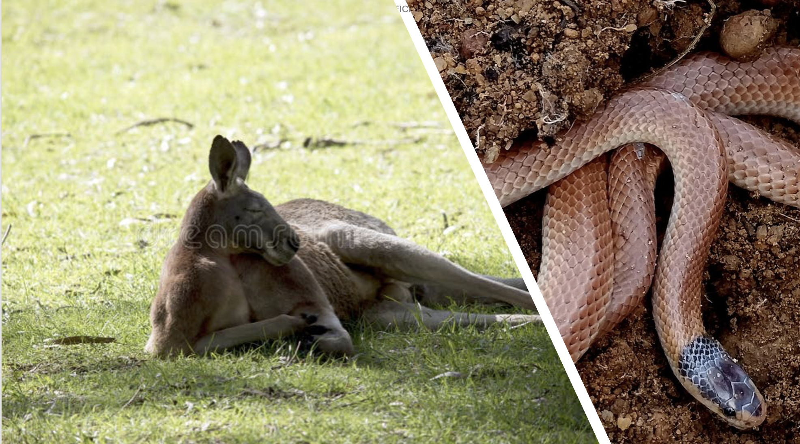
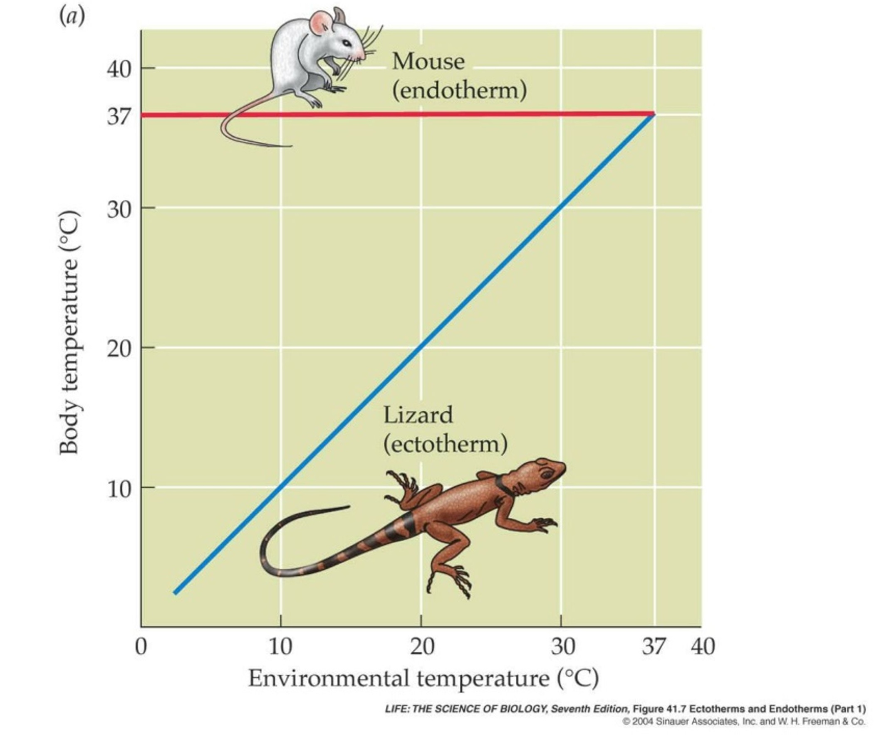
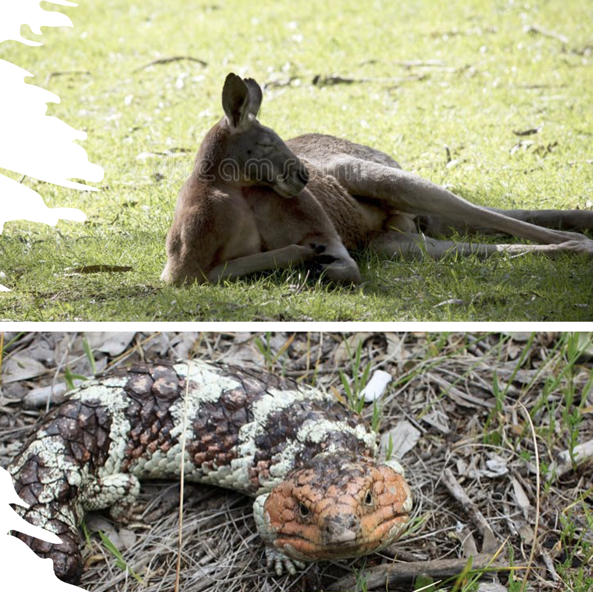

Endotherms and Ectotherms
Term 1, Week 5, Lesson 2

Do Now
In your book, sort the following animals into two groups based on how you think each animal gets its body heat. Label your groups however makes sense to you.
Animals: red kangaroo, dugite snake, laughing kookaburra, western blue-tongue lizard, bilby, freshwater marron, wedge-tailed eagle, bobtail lizard, echidna, western bearded dragon
Write your two groups and explain in one sentence why you sorted them that way.
You have 3 minutes.
Daily Review
Answer the following 5 multiple choice questions in your book:
- The correct order in a stimulus–response pathway is:
- Stimulus → effector → receptor → response
- Receptor → stimulus → coordinator → response
- Stimulus → receptor → coordinator → effector → response
- Response → receptor → effector → stimulus
- A receptor is:
- A muscle that carries out a response
- A specialised cell or organ that detects a specific stimulus
- The brain’s decision-making centre
- A chemical messenger released into the blood
- Homeostasis is best described as:
- The process by which organisms evolve new adaptations over generations
- The maintenance of a stable internal environment despite external changes
- An organism’s instinctive response to a predator
- The growth of plant shoots toward a light source
- A banksia closing its stomata on a hot, dry afternoon is an example of:
- A structural adaptation being activated
- A stimulus–response to water stress
- Positive phototropism
- Homeostasis breaking down
- Which of the following is the effector in this pathway: a drop in temperature → thermoreceptors in skin → brain → sweat glands stop producing sweat?
- Thermoreceptors in the skin
- The brain
- The drop in temperature
- The sweat glands
- C 2) B 3) B 4) B 5) D
Learning Intentions
Today we are learning to distinguish between endotherms and ectotherms, and to explain the advantages and disadvantages of each thermoregulation strategy in terms of metabolic rate and energy requirements.
Success Criteria
You will be successful if you have:
Keywords
- Endotherm
- An animal that generates heat internally through its own metabolic processes (cellular respiration) to maintain a stable core body temperature regardless of external conditions. Birds and mammals are endotherms. Sometimes called “warm-blooded”, though this term is not preferred in science.
- Ectotherm
- An animal whose body temperature is primarily determined by external heat sources in the environment. Reptiles, fish, amphibians and most invertebrates are ectotherms. Sometimes called “cold-blooded”, though this is misleading — an ectotherm’s blood can be very warm.
- Metabolic rate
- The rate at which an organism uses energy (through cellular respiration) to sustain all body functions — movement, growth, digestion, reproduction and heat production. Endotherms have a much higher resting metabolic rate than ectotherms of similar body mass.
- Thermoregulation
- The process by which an organism maintains its body temperature within a range that allows its enzymes to function effectively.
Learning Activities
Activity 1 — I DO: Two Strategies for Managing Body Temperature
What Is the Problem?
All biochemical reactions in living cells are controlled by enzymes. Enzymes have an optimal temperature range — too cold and they slow down; too hot and they denature (their shape changes permanently and they stop working). Every organism must keep its body temperature in a range where its enzymes work properly.
There are two fundamentally different strategies to achieve this:

Endotherms — Internal Heat Generation
Endotherms (birds and mammals) generate heat as a by-product of their own high metabolic rate:
- Cells constantly break down glucose through cellular respiration, releasing heat as a by-product.
- The hypothalamus (a part of the brain) monitors core body temperature and triggers physiological responses (sweating, shivering etc.) to keep it stable.
- Core body temperature remains roughly constant (37–42°C in most mammals and birds) regardless of the environmental temperature.
WA endotherm examples: red kangaroo (Osphranter rufus), bilby (Macrotis lagotis), laughing kookaburra (Dacelo novaeguineae), echidna (Tachyglossus aculeatus), humpback whale.
Ectotherms — External Heat Sources
Ectotherms (reptiles, fish, amphibians, invertebrates) rely on heat from the external environment:
- Their body temperature rises and falls with the surrounding temperature.
- They use behaviour (basking, burrowing, shuttling) rather than internal heat generation to manage temperature.
- Their metabolic rate is low at rest — they don’t need to “burn” as much energy just to stay alive.
WA ectotherm examples: dugite snake (Pseudonaja affinis), western blue-tongue lizard (Tiliqua occipitalis), bobtail/shingleback (Tiliqua rugosa), freshwater marron (Cherax tenuimanus), western bearded dragon (Pogona minor).
Comparing the Two Strategies

| Feature | Endotherm | Ectotherm |
|---|---|---|
| Heat source | Internal (metabolism) | External (environment) |
| Body temperature | Stable regardless of conditions | Varies with environment |
| Metabolic rate | High (even at rest) | Low at rest |
| Food requirement | Much higher — large proportion of energy used for heat | Much lower — little energy used for heat |
| Activity in cold | Can remain active | Sluggish or inactive |
| Drought/food scarcity | More vulnerable — must keep eating | Can survive much longer without food |
Advantages and Disadvantages
| Endothermy | Ectothermy | |
|---|---|---|
| Advantages | Active in cold conditions; stable enzyme function; consistent athletic performance; can live in polar environments | Very energy-efficient; can survive long periods without eating; lower food requirements |
| Disadvantages | Very high food requirements; large proportion of energy “wasted” as heat; more vulnerable to starvation | Inactive or sluggish in cold conditions; dependent on weather; vulnerable to extreme heat events |
WA Case Study: Dugite vs Red Kangaroo
Both species live across a wide range of WA environments, from the south-west to the Kimberley. Yet their thermoregulation strategies are radically different:
- A dugite may eat only a few times per month — once it has digested a meal, its low metabolic rate means very little energy is needed to stay alive.
- A red kangaroo must eat every day. A significant portion of the energy in its food goes directly to generating body heat.
Check for Understanding
Classify each animal as endotherm (E) or ectotherm (C):
| Animal | E or C? |
|---|---|
| Laughing kookaburra | |
| Western bearded dragon | |
| Freshwater marron | |
| Echidna | |
| Dugite snake | |
| Humpback whale |
Answers: kookaburra — E, bearded dragon — C, marron — C, echidna — E, dugite — C, humpback whale — E
Activity 2 — WE DO: Comparing a WA Ectotherm and Endotherm

As a class, we will analyse information about the western blue-tongue lizard and the red kangaroo, and fill in the guided comparison table below.
Guided Comparison Table
| Western Blue-tongue Lizard | Red Kangaroo | |
|---|---|---|
| Endotherm or ectotherm? | ||
| How does it get body heat? | ||
| Approximate food intake per week | Low — feeds irregularly | High — grazes daily |
| Activity on a cold (10°C) morning | ||
| Activity on a hot (42°C) afternoon | ||
| Metabolic rate at rest | ||
| Main advantage of its strategy |
Discussion Questions
- A drought hits central WA and food becomes very scarce for several months. Which animal is likely to survive longer — the blue-tongue lizard or the red kangaroo? Explain your reasoning.
- Could a reptile ever survive in Antarctica? What would be the main problem?
- The kookaburra is active at dawn on cold winter mornings when lizards are still torpid. How does this relate to the energy trade-off of endothermy?
Activity 3 — YOU DO: Endotherms and Ectotherms

Complete the worksheet: 152-endotherms-and-ectotherms-you-do.docx
You will classify animals, interpret a body temperature graph, and write a short explanation comparing the energy costs of endothermy and ectothermy.
Work independently. You have 10 minutes.
Notes
Use this space to write any important points from today’s lesson.
Reflection
- An animal that generates its own body heat internally through metabolism is called:
- An ectotherm
- An endotherm
- A thermoconformer
- A poikilotherm
- Which of the following is an ectotherm?
- Red kangaroo
- Emperor penguin
- Western blue-tongue lizard
- Echidna
- Which of the following is an advantage of ectothermy?
- Being able to remain active in cold weather
- Having stable enzyme function at all environmental temperatures
- Requiring far less food energy than an endotherm of similar size
- Having a high resting metabolic rate
- On a graph of body temperature (y-axis) vs ambient temperature (x-axis), the line for an endotherm would show:
- Body temperature rising steeply with ambient temperature
- Body temperature remaining roughly constant across a wide range of ambient temperatures
- Body temperature always lower than ambient temperature
- Body temperature dropping as ambient temperature rises
- Short answer: Explain why an endotherm requires significantly more food than an ectotherm of similar body size. Refer to metabolic rate in your answer.
Home-study
Choose one WA ectotherm and one WA endotherm not used as examples in today’s lesson. For each animal, write 2–3 sentences describing: (1) how it gets its body heat, and (2) one advantage of its thermoregulation strategy in the specific WA environment it lives in.